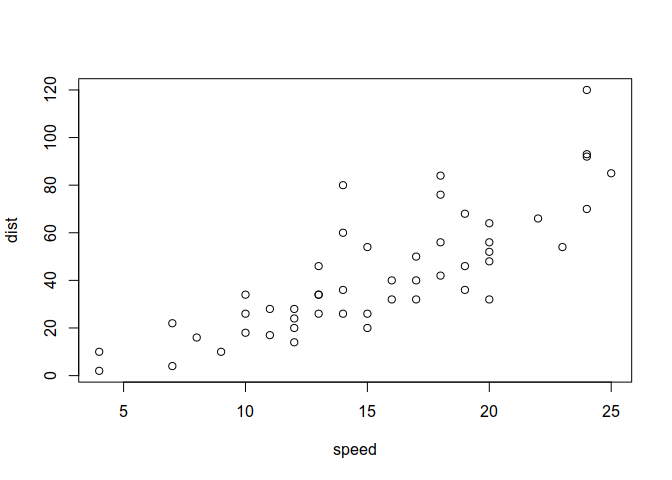

Jupyter notebook, main page
Contents
Jupyter notebook, main page#
See each section about dedicated languages accepted in a notebook.
Note the following:
Pure HTML sessions should be included manually through web-links.
Pure PDF sessions should be aside from this book, and included manually through web-links.
Please consider the following:
Compile all your R-markdown, IPython notebooks, etc. on IFB core cluster, using modules.
Leave a
readme.txt/compile.shwith instructions on how to compile your session.Leave an environment.yaml containing conda/mamba installation instructions.
@IFB: Please consider moving from Github to Gitlab. @EBAII: Please consider moving back to Galaxy, this message is sponsored by Galaxy-tee-shirt-team.
Pure Ipython-notebook: Theory#
Find more information about:
print("You can write R/perl/python/sh ... in a ipython notebook.")
You can write R/perl/python/sh ... in a ipython notebook.
Ipython notebooks can be included as either restructured text, or markdown.
Pure Ipynb: practice part#
Inclusion of IPython notebook is quite straightforward.
Environment conda:
mamba env create -f environment.yaml -p ./ipython-notebook
Load conda environment: conda activate --no-stack ./ipython-notebook
Convert ipython-notebook to rst:
jupyter nbconvert --to rst Practice.ipynb for Practice.rst, and
jupyter nbconvert --to rst Theory.ipynb
Now go to general section to compile the whole book.
PS:#
Note you can activate a conda environment within a notebook. See on StackOverflow. But I would highly discourage it.
Pure Markdown: Theory#
Jupyter notebook allow direct inclusion of Markdown files.
Pure Markdown: Practice#
Simply to general section to compile the whole book.
Including RMarkdown to Jupyter-notebook is easy: simply compile your R-markdown to markdown or Restructured Text before compiling the whole book.
Image inclusion is automatic from R code:
plot(cars)

How to include IPython notbook in a Jupyter-book: Environment conda:
mamba env create -f environment.yaml -p ./rmarkdown
Load conda environment: conda activate --no-stack ./rmarkdown
Convert ipython-notebook to rst:
R --vanilla -e 'rmarkdown::render("Practice.rmd");' for Practice.rst,
and R --vanilla -e 'rmarkdown::render("Theory.rmd");'
Now go to general section to compile the whole book.
Pure Markdown: Theory#
Jupyter notebook allow direct inclusion of Restructured Text files.
Pure Markdown: Practice#
Simply to general section to compile the whole book.